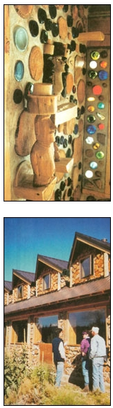

ROB ROY
Cordwood building naturally lends itself to whimsical expression. Above: Colorful glass bottles transcend their former lives, reincarnated as orbs of art and light in a cordwood wall. Below: Visitors at Sage Mountain Center tour the Center's cordwood-constructed lodge.